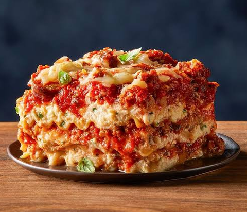

Home
Lasagna

Description
Lasagna, also known by the plural form lasagne, is a type of pasta made in wide, flat sheets. It originates in Italian cuisine, where it is served in a number of ways, but is most often served as a casserole made by stacked layers of pasta, alternating with fillings that could consist of meat, dairy, vegetables, and sauces.
Ingredients
- Ricotta Cheese
- Meat
- Pasta Sauce
- Spinach
- Spices
- Garlic
- Sausage
- Mozzarella
- Egg
- Lasagna
- Onion
- Tomato Paste
- Parmesan
- Parsley
Steps
- Boil pasta: In a large pot of salted water boil lasagna noodles per the recipe below.
- Prepare meat sauce: Cook sausage and beef with onion and garlic. Drain well, add the pasta sauce (I love this brand) & simmer it for a few minutes to thicken.
- Combine cheese mixture: Stir the cheese mixture together in a bowl.
- Layer & bake: Layer the meat sauce and cheese mixture with lasagna noodles and bake until the top of the lasagna is golden brown.
- Let the Lasagna Rest: Once removed from the oven, let the lasagna sit/rest for at least 15 minutes (up to 45 minutes is fine, it will retain the heat well). This will allow it to thicken up a bit and help it keep its shape when cut. Resting is not required when reheating.
Sources
Lasagna Recipe
wikipedia source
Image Source